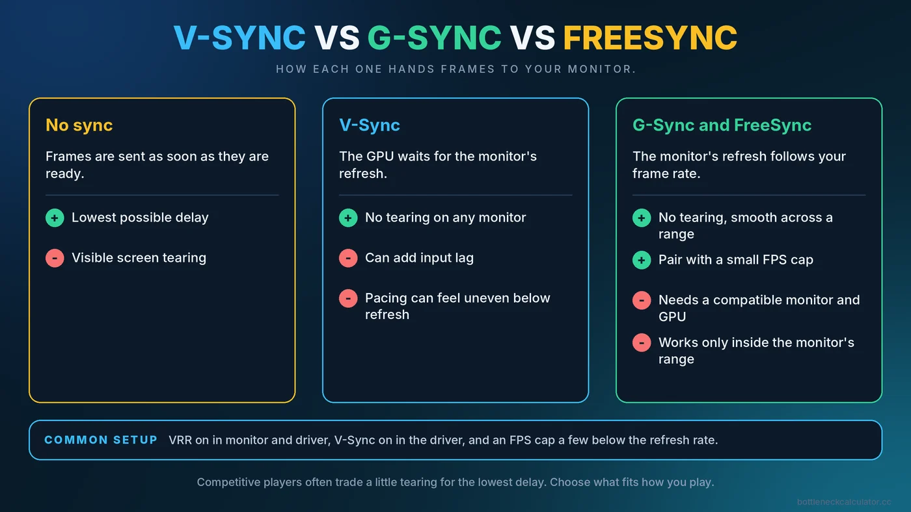
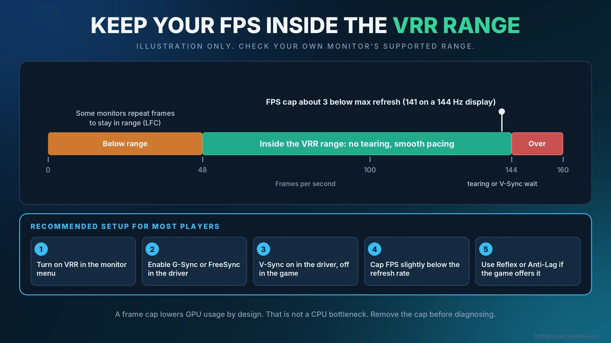

V-Sync vs G-Sync vs FreeSync: Best Settings, FPS Caps and Input Lag
Screen tearing, stutter and input lag all come back to one question: how does your graphics card hand frames to your monitor? V-Sync, G-Sync and FreeSync are three answers to that question. This guide explains what each one does, what it costs, and the setup most players find smoothest.

The Problem These Features Solve
Your monitor refreshes at a fixed rate, such as 60 or 144 times per second. Your graphics card produces frames at a rate that constantly changes. When a new frame arrives while the monitor is part-way through drawing the previous one, you can see a horizontal split called screen tearing. The three technologies below handle that mismatch in different ways.
What Each Option Does
| Option | How it works | Main benefit | Main drawback |
|---|---|---|---|
| No sync | Frames are sent as soon as they are ready | Lowest delay | Visible tearing |
| V-Sync | The GPU waits for the monitor's refresh before showing a frame | No tearing on any monitor | Can add input lag and uneven pacing when FPS drops below refresh |
| G-Sync / FreeSync (variable refresh rate) | The monitor changes its refresh to match the frame rate | No tearing with smoother pacing across a range of FPS | Needs a compatible monitor, GPU and cable, and works only within the monitor's range |
V-Sync Explained
Traditional V-Sync forces the graphics card to line frames up with the monitor's refresh. It removes tearing, but when the card cannot keep up with the refresh rate, some implementations drop to fractions of it, such as half, which feels like a sudden stutter. Because frames queue up waiting for the next refresh, it can also add delay between your input and what you see. That is why competitive players often avoid it.
G-Sync and FreeSync Explained
G-Sync is NVIDIA's name for variable refresh rate, and FreeSync is AMD's. Both let the monitor wait for the graphics card instead of the other way around, so each frame is shown when it is ready. You also see these terms:
- G-Sync Compatible means a FreeSync-type monitor that NVIDIA has validated for its cards.
- FreeSync Premium adds requirements such as support for low frame rate compensation.
- HDMI and DisplayPort adaptive sync are the underlying standards many monitors implement. Support depends on both the monitor and the connection.
Variable refresh works inside the range the monitor supports. Below the bottom of that range, many monitors use low frame rate compensation, which repeats frames to stay in range. Look up your monitor's specification to see the exact range.

A Setup That Works for Most Players
Exact menus vary by monitor and driver, but this combination is widely recommended for smooth play on a variable refresh monitor.
- Enable variable refresh in the monitor menu. Look for FreeSync, Adaptive Sync or G-Sync in the on-screen display.
- Enable it in your graphics driver. In the NVIDIA or AMD software, turn on G-Sync or FreeSync for your display.
- Turn on V-Sync in the driver, and set it off inside the game. This helps the display handle frame delivery cleanly and avoids tearing at the top of the range.
- Cap your frame rate slightly below the refresh rate. A cap of about 3 FPS under the maximum, for example 141 FPS on a 144Hz monitor, keeps the game inside the variable refresh range. Use the in-game limiter or the driver's maximum frame rate setting.
- Use a low-latency mode if your game offers one. NVIDIA Reflex and AMD Anti-Lag are designed to reduce the delay between input and display.
How an FPS Cap Affects GPU Usage
A frame cap changes what your hardware reports, and that can look like a problem when it is not one. If your graphics card could render 200 FPS but you cap at 141, the card idles part of the time, so GPU usage drops below 100%. That is expected behavior, not a CPU bottleneck. Before concluding that something is holding you back, remove the cap and watch what happens. Our guide on fixing low GPU usage walks through this diagnosis, and the bottleneck checking guide shows how to test properly.
Which Option Fits Which Player
- Single-player and cinematic games. Variable refresh with a small cap gives smooth, tear-free results with low delay.
- Competitive shooters. Many players run uncapped or capped high with variable refresh, accepting tiny amounts of tearing in exchange for the lowest delay. A low-latency mode is more useful here than V-Sync.
- Monitors without variable refresh. Use V-Sync if tearing bothers you and your PC stays above the refresh rate. Otherwise, a frame cap alone can reduce tearing and heat.
- Weak PCs struggling to hit 60. Lower settings first, because sync features cannot add frames. See how to fix a PC bottleneck and boost FPS.
Common Problems and Fixes
- Tearing still appears. Check that variable refresh is enabled in both the monitor and the driver, and that the game runs in a full-screen or borderless mode that the driver supports.
- Flicker in menus or loading screens. Some panels, especially certain VA and OLED models, can flicker when the frame rate swings widely. Capping the menu frame rate often helps.
- Stutter even with sync on. The cause may be CPU spikes, shader compilation or storage rather than the display. Read what causes PC stuttering.
- Refresh rate is wrong. Confirm Windows is set to your monitor's highest refresh rate. Our Windows gaming settings guide shows where.
- Frame generation feels odd. Features that insert extra frames add their own delay. Our article on DLSS, FSR and frame generation explains how they interact with your limits.
Does Refresh Rate Matter More Than Resolution?
That is a personal choice, but it does affect which part of your PC is under pressure. High refresh rates at lower resolutions put more load on the CPU, while high resolutions put more load on the GPU. For the details, see our 1080p, 1440p and 4K bottleneck guide.
Conclusion
V-Sync prevents tearing at a possible cost in delay and smoothness. G-Sync and FreeSync adapt the monitor to your frame rate and usually feel better when combined with a small FPS cap. Choose the setup that fits how you play, and remember that a cap lowers GPU usage by design. To check that your CPU and GPU are balanced for your refresh rate and resolution, try the free Bottleneck Calculator.
Frequently Asked Questions
Should I use V-Sync with G-Sync or FreeSync?
Many guides recommend turning V-Sync on in the graphics driver and off in the game when variable refresh is enabled, together with a frame cap slightly below the refresh rate. Behavior can vary, so test with your own setup.
What FPS cap should I use for a 144Hz monitor?
A cap of about 3 FPS below the maximum, such as 141, is a common starting point. It keeps the game inside the variable refresh range.
Does V-Sync lower FPS?
It can. If your PC cannot hold the refresh rate, some V-Sync modes drop to fractions of it, which looks like a sudden loss in smoothness. Variable refresh avoids most of that.
Is FreeSync as good as G-Sync?
Both achieve the same goal. Quality depends on the monitor's implementation and range, so look at the specific model's specifications and reviews.
Why is my GPU usage low when I cap FPS?
Because the card finishes frames faster than the cap requires and waits. This is expected and does not mean your PC has a bottleneck.